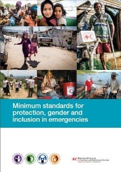
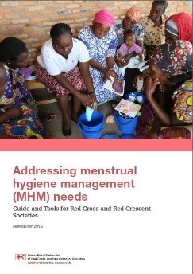

- IFRC Africa
- FedNet
- GO (global)
-

Seul et dangereux : Les enfants, les migrations et la violence sexuelle et sexiste
-

Normes minimales en matière de protection, d'égalité des sexes et d'inclusion dans les situations d'urgence
-

SEPT MOUVEMENTS:Protection, genre et inclusion dans la formation aux situations d'urgence Manuel de l'animateur
-

SEPT MOUVEMENTS:Protection, genre et inclusion dans la formation aux situations d'urgence Manuel du participant
-

Répondre aux besoins de la gestion de l'hygiène menstruelle (GAM) - Guide et outils pour les Sociétés de la Croix-Rouge et du Croissant-Rouge
-

Catalogue d'activités pour les espaces amis des enfants dans les situations humanitaires
Dernières Nouvelles Région Afrique
Journée Internationale de la Journée 8 Mars 2019 #BalanceforBetter: La Croix-Rouge de Côte d’Ivoire a organisé une cérémonie pour célébrer toutes les femmes de la Société Nationale. Cette journée a été l’occasion de reconnaître l’apport continu des femmes au développement de la Société Nationale, de célébrer l’excellence et le leadership féminin et de rappeler à la conscience collective les droits des femmes à tout point de vue.
Le CRRC met l'accent sur la Journée internationale de la femme 2019:Le personnel du bureau régional de la FICR pour l'Afrique a participé à une séance d'information sur le genre et la diversité et sa pertinence dans notre travail en tant que FICR. Jane Waithera, directrice de Positive Exposure, un organisme de défense des droits des personnes handicapées, a animé la séance. Elle a expliqué aux participants ce qu'impliquent la diversité et l'inclusion et comment s'assurer qu'en travaillant sur la diversité sur le lieu de travail et dans notre travail, nous assurons l'inclusion parce qu'il peut y avoir diversité mais pas inclusion. Le personnel de la FICR a pu discuter en groupes et échanger des idées sur ce qui devrait être fait pour assurer la diversité et l'inclusion au bureau régional Afrique de la FICR.
FICR'Action commune pour la prévention et la réponse à la violence sexuelle et sexiste' - Formation de formateur, 27 avril - 2 mai 2019: L'équipe du Bureau régional de la FICR de l'IGP de la Croix-Rouge néerlandaise a appuyé le projet SGBV à Terekeka et à Djouba ainsi que l'Équipe nationale de protection en cas de catastrophe nouvellement créée (NDRT).
Formation Seven Moves, Gambie, 15-17 mai 2019:
L'équipe régionale du PGI de la FICR a formé le personnel et les volontaires de la Croix-Rouge gambienne à la mise en œuvre des programmes Seven Moves de la FICR afin de s'assurer que les programmes sont effectivement mis en œuvre grâce à l'intégration des normes minimales de la FICR pour le PGI.
Réunion annuelle du Réseau mondial sur le genre et la diversité et formation sur l'inclusion des personnes handicapées tenues du 8 au 12 avril 2019:
Le Réseau mondial Genre et diversité est composé de membres du personnel de la FICR, du CICR et des CR des Sociétés nationales qui partagent un intérêt commun pour la promotion de l'égalité des sexes et de la diversité et des efforts du PGI au sein du Mouvement de la Croix-Rouge et du Croissant-Rouge. Le Réseau réunit chaque année l'équipe mondiale pour partager les meilleures pratiques, planifier l'année en matière de genre et de diversité et assurer la complémentarité dans notre travail. L'adhésion au Réseau est ouverte à toutes les Sociétés nationales pour plus d'informations, veuillez contacter Lisa Akero Coordinatrice mondiale de la FICR pour l'égalité des sexes et la diversité lisa.akero@ifrc.org
Formation sur l'inclusion des personnes handicapées, 11 - 12 avril 2019:
La formation a été organisée en collaboration avec des organisations de défense des droits des personnes handicapées au Kenya, notamment l'Association kenyane pour les handicapés mentaux (KAIH), la Fondation Action (TAF) et le Réseau kenyan de défense des droits des femmes et des filles handicapées. Ils ont partagé avec les membres du réseau mondial sur le genre et la diversité leurs expériences en tant que femmes et filles handicapées et les mesures pratiques à prendre pour que notre travail humanitaire réponde aux besoins des personnes handicapées. L'événement a été organisé par le Ministère norvégien des affaires étrangères en collaboration avec le Gouvernement somalien, le Bureau de la coordination des affaires humanitaires de l'ONU, le FNUAP et le CICR ont organisé une conférence mondiale sur la violence sexuelle et sexiste à Oslo, Norvège.
Conférence mondiale sur la violence sexuelle et sexiste à Oslo, Norvège, 23-24 mai 2019:
De la région Afrique, le CR Sud-Soudan, le CR Burundi et le CR RDC ont participé et ont pu partager leur travail sur la violence sexuelle et sexiste au sein de la communauté, y compris les succès, les défis et les opportunités.
Events and Trainings
June 25th - 27th: Atelier sur la santé, Nairobi, Kenya.
July 1st - 3rd: Formation des points focaux pour l'égalité des sexes et la diversité, Nairobi, Bureau régional de la FICR pour l'Afrique.
August 19th-22nd:Niger RC et IFRC Joint Action conjointe pour la prévention et la réponse à la violence sexuelle et sexiste.
August 26th-29th: Benin RC et IFRC Joint Action conjointe pour la prévention et la réponse à la violence sexuelle et sexiste.
September 9th-12th: Congolaise RC et IFRC Action conjointe pour la prévention et la réponse à la violence sexuelle et sexiste.
October 28th-31st: Point focal pour la formation sur les normes minimales en matière de protection, d'égalité des sexes, d'inclusion et d'élaboration des politiques
Protection Genre & Inclusion Ressources
Dignity Access Participation Safety (DAPS)
Le cadre du DAPS fournit un guide simple mais complet pour aborder les actions essentielles des programmes d'urgence de la Croix-Rouge et du Croissant-Rouge.
Dignité
Pour le Mouvement de la Croix-Rouge et du Croissant-Rouge, la dignité humaine signifie le respect de la vie et de l'intégrité des personnes. Tous les intervenants de la Croix-Rouge et du Croissant-Rouge et les programmes d'intervention d'urgence devraient contribuer au maintien et à la promotion de la dignité humaine..
Accès
Les programmes d'intervention d'urgence devraient permettre l'accès de tous les individus et sous-groupes de la population touchée. En conséquence, les critères de sélection et de hiérarchisation des bénéficiaires pour l'accès aux biens, aux services et à la protection humanitaires doivent être fondés sur une analyse de genre et de diversité afin de garantir que l'assistance et la protection atteignent les personnes les plus à risque..
Participation
La participation fait référence à la participation pleine, égale et significative de tous les membres de la communauté dans les processus décisionnels et les activités qui affectent leur vie. Le partage de l'information est une norme humanitaire de base pour la reddition de comptes aux bénéficiaires et constitue un élément essentiel de la participation.
Sécurité
Les femmes, les hommes et les autres identités sexuelles de tous âges et de toutes origines au sein des communautés affectées ont des besoins différents en ce qui concerne leur sécurité physique. Il est essentiel de surveiller la sécurité des sites du projet du point de vue des divers groupes afin de s'assurer que l'aide fournie répond aux besoins et aux préoccupations de tous de façon équitable..